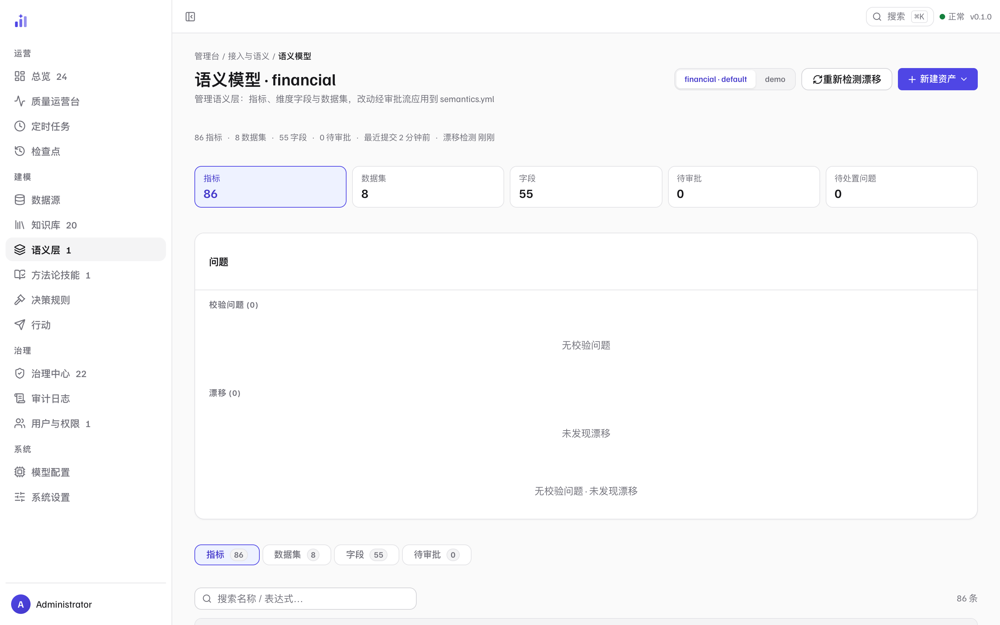
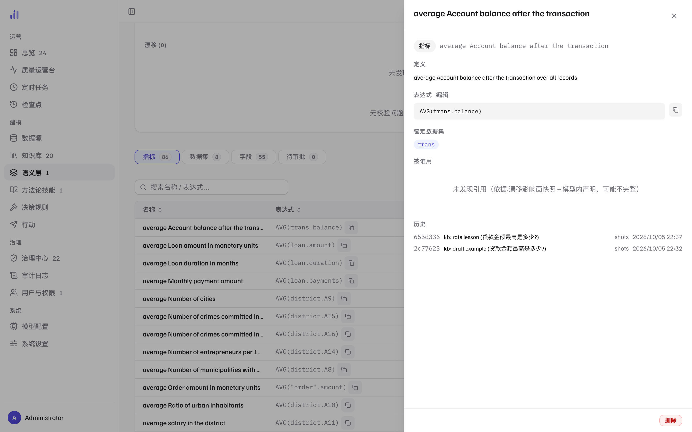
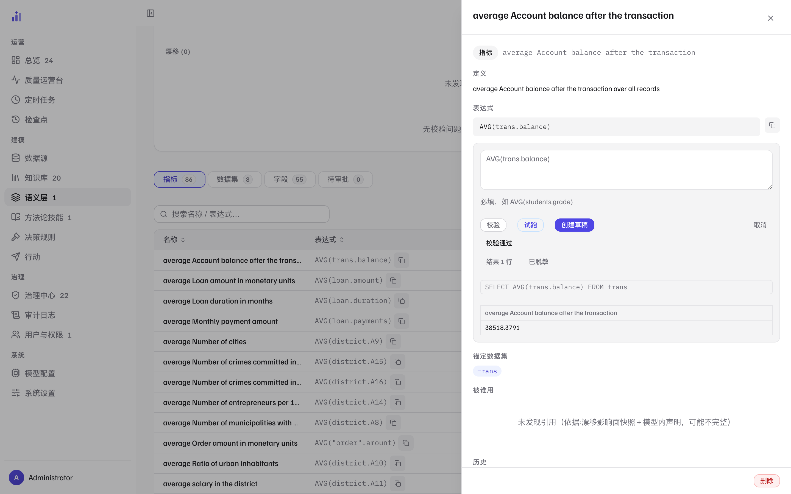

语义层治理
语义模型（semantics.yml）是 Trove 生成答案的权威口径：
指标怎么算、维度锚在哪个数据集，编译器就按它拼 SQL。
/admin/semantic 是它的工作台——所有改动先草稿、后审批，确认才写入文件；
成批、需要留一份复核记录的改动走变更评审。
工作台全貌

1 2 3 4 5- 1页头动作——切换数据源、重新检测漂移（对照物理 schema 的实时探测）、新建资产（新增指标 / 数据集 / 字段，同样走草稿）。
- 2摘要行——指标 / 数据集 / 字段 / 待审批 / 最近提交时间 / 漂移检测时间。一眼确认「模型有多大、上次动是什么时候」。
- 3五项 KPI——每项都是入口：指标 / 数据集 / 字段 / 待审批点开即切 tab；「待处置问题」点开按问题过滤（再点一次取消）。
- 4问题面板——两个独立小节：校验问题（lint：表达式语法、数据集锚定、引用完整性）与漂移（物理 schema 与模型不符，如列被删改）。全净时就是一行「无校验问题 · 未发现漂移」——这一行是日常巡检的目标状态。
- 5四个 tab 与资产表——指标 / 数据集 / 字段 / 待审批；表内可按名称、表达式排序与搜索。点任意行打开资产详情（图 2）。
资产详情：一条指标的全息档案

1 2 3 4 5- 1表达式——指标的计算式（
AVG(trans.balance)），可一键复制；「编辑」进入图 3 的编辑器。 - 2锚定数据集——这条指标声明依赖哪个数据集（
trans）。编译器据此决定 join 范围；锚定错了，生成的 SQL 会整体走偏。 - 3被谁用——引用它的示例 / 教训等资产；暂无引用时显示空态「未发现引用」（图中即是）。注意边界提示：「依据:漂移影响面快照 + 模型内声明，可能不完整」——不确定的地方不装确定。
- 4历史——每次改动的提交记录（短哈希、变更类型与标题、提交人、时间）。谁在什么时候改的、改的是什么，从 git 视角可追。
- 5删除——危险动作，删除同样先落草稿、经审批才生效；引用它的资产会在「被谁用」里暴露出来，删之前先看这里。
改一条表达式：校验 → 试跑 → 创建草稿
点表达式旁的「编辑」打开编辑器。三个按钮是一条顺序化的流程： 先校验（结构 lint，通过前「创建草稿」保持禁用），再试跑（用与用户问答同一条编译路径 跑一次真实查询），最后创建草稿。

1 2 3- 1表达式文本域——改计算式本身（如把
AVG换成别的聚合）。语法约束在下方有提示。 - 2校验 / 试跑 / 创建草稿——校验给出结构结论（图中「校验通过」）；试跑把表达式交给真实编译器与数据库；创建草稿把这次改动登记进待审批队列。试跑通过 ≠ 直接生效，生效永远在审批之后。
- 3试跑结果——编译器实际生成的 SQL（
SELECT AVG(trans.balance) FROM trans）与一行真实结果，按脱敏策略回显（图中标注「已脱敏」）。改口径前先看它跑出来什么数——这是比读表达式更可靠的确认。
草稿进入「待审批」tab 后会带一份服务端计算的 diff；打开草稿时系统会重新校验——
校验不过的草稿不能应用（按钮禁用，原因就摆在旁边）。确认后才写入 semantics.yml，
并作为一次提交留痕（图 2 的历史）。批量勾选可以一次确认或拒绝多条。
待审批队列里的草稿从哪来？除了手工新建与历史蒸馏，还可以先跑一轮 覆盖率体检：把一批真实问题按编译结果分类， 指标 / 字段 / 值 / 实体缺口可一键落成待确认草稿，再回到这里的「待审批」逐条确认； 关系与数据集类缺口只给深链，需要在这里手工声明。
语义模型是编译路径的输入：一条表达式改错，所有命中它的提问都会拿到一个「语法正确、口径错误」的答案， 而且答案来源档位还会写着「语义编译」——错得越自信越危险。 草稿 + diff + 重新校验 + 落盘留痕，四道都为了把「改口径」变成一个可回退的动作。
漂移检测：物理库不打招呼就变了
「重新检测漂移」把语义模型与物理 schema 的当前状态对照一遍：列被删、类型被改、数据集对应的表 消失，都会成为漂移条目。检测本身失败（例如探测超时）时状态保持「未检测」， 不会洗成「无漂移」——不知道就说不知道。漂移的处置与影响面分析在 漂移检测（运维）与治理中心。
语义变更评审：隔离区 → 回放 → 影响面 → 合入
上面那条草稿路是「一次改一条、每条一次确认」。当一次改动涉及多条资产， 或者你需要一份能递出去的复核记录时，走变更评审。 一次变更从开出到合入，中间会为它算三样东西——它会改什么、 会不会把原本能跑的东西弄坏、还有谁依赖被改的东西—— 三样都在合入之前给全，而不是合入之后再说。
| 步 | 做什么 | 纪律 |
|---|---|---|
| ① 开单 | 把改动作用到当前模型的一份内存副本上干跑一次；通过后把「改之前 / 改之后」两份快照写进数据源目录下的隔离区（.staging/<change_id>/） |
隔离区被 git 忽略、不参与编译、不被检索——没被确认的改动在系统里不存在。开单对 semantics.yml 零字节修改（落盘的是快照与一条变更记录） |
| ② 看 diff | 模型级对比：按数据集 / 指标 / 关系 / 主题域 / 层级（外加展平的 dataset.field）逐节列出新增、删除、修改；修改逐字段给 before / after |
合入那一刻把这份 diff 冻结进记录——事后打开审计面板看到的是当时那份，不是重算出来的 |
| ③ 跑回放 | 零 LLM、零查询的纯编译：把 KB 里一切以语义查询声明的东西（判定规则的主体、主题域）在改前与改后模型上各编译一遍 | 一条可回放的产物都没有时明说「不适用」，不冒充「无变化」；回放中途出错是「判不了」，也不冒充通过 |
| ④ 看影响面 | 谁引用了被改的资产：结构化引用（判定规则的指标 / 维度 / 过滤、主题域的数据集 / 指标声明）与词面提及（示例、教训的文本） | 两类依据分开标注强度——「规则声明里引用了它」与「某条示例文本里出现过它」不是同一种把握 |
| ⑤ 合入 / 驳回 | 合入写盘并留一次提交；驳回必须填理由 | 无理由的驳回等于删记录 |
回放给出的结论每种都对应一句说得出的话：
| 结论 | 含义 |
|---|---|
regresses | 改前编得过、改后编不过——这次改动弄坏了东西。高亮显示，但不硬阻断：修改语义模型本身就是正当的改动方向，判断留给人 |
improves | 至少有一条从「编不过」变成「编得过」，且没有回归 |
neutral | 其余情况：跑过了，两边一样 |
not_applicable | KB 里没有可回放的产物，这次没有可比的东西——原因原样带出 |
unknown | 回放本身出错（模型解析失败、读不到产物……）——「判不了」，绝不渲染成通过 |
语义模型的每一次写盘——草稿确认、确定性门放行、变更合入——都收敛到同一个函数， 按同一条顺序执行：先取漂移警告（只记不拦）→ 快照与主线现文件不符就拒绝 （409，主线与隔离区零字节变化）→ payload 应用失败或有阻断级 lint 就拒绝（422）→ 全过了才写。 这些判定都在第一个字节落盘之前完成。
「阻断级」这个词有唯一定义：写前门禁与 git 提交门禁共用同一个判据， 两处不各自分级——不会出现「合入时说通过、提交时又被拦下」。
写盘本身是单文件原子替换，几份文件之间不是事务——恢复凭 git，已提交的主线是权威。 合入把模型、变更记录、草稿（如果有）放进一次提交：谁在什么时候合了什么，一条记录说得清。
「自动批准」标记没有 HTTP 入口——它只能由确定性门自己写。客户端可控的参数会让审计标记可伪造： 一条被洗成「自动门放行」的人工合入，事后没人分得出来。
合入前的那道漂移 warn 门只做一件事：把这次变更碰到的资产与尚未处置的漂移主体求交集， 命中就随记录带一条警告。它只警告、不阻断（漂移什么时候处置是人的事）， 而且只在合入前一刻查——开单时查到的是「当时」的漂移，合入前那一刻的才是要看的那份。 读不到漂移就说读不到（降级明示），不洗成「没有漂移」。
| 动作 | 端点（前缀 /v1） | 权限 |
|---|---|---|
| 开单 | POST /admin/semantic/{name}/changes → 201 | admin |
| 列表 / 详情 | GET …/changes · GET …/changes/{id} | admin 或 analyst（只读角色能看不能动） |
| 回放 | POST …/changes/{id}/verify | admin |
| 合入 | POST …/changes/{id}/merge | admin |
| 驳回 | POST …/changes/{id}/reject（理由必填） | admin |
失败分四档，语义不重合：400 确定性错误（payload 形状不对、驳回没写理由、变更不在可评审状态、快照已丢）；
404 数据源或变更不存在；409 基准快照与主线现文件不符——这条变更过期了，要重开；
422 应用失败或有阻断级 lint，意思是「改动本身不合规」，不是「系统出错了」。
变更的状态是 open → merged / rejected（状态机里另有两个保留值，当前没有写入者）。
评审面板在语义台的「变更」tab：抽屉里 diff、影响面、回放三节依次排开， 三个动作按钮是运行验证（随时可跑——纯编译、幂等、零成本）、合并与驳回 （非 open 状态禁用，驳回走确认框且理由必填）。开单目前没有前端入口，走上面那个 API。
staging.py:23 StagingArea changes.py:244 open changes.py:482 merge changes.py:371 _write_merge issues.py:279 blocking_issues diff.py:121 build_change_diff sandbox.py:58 run_replay impact.py:60 resolve_impact semantic.py:551 open_semantic_change semantic.py:614 merge_semantic_change test_semantics_write_posture.py:135 test_no_unwhitelisted_semantics_writers
「唯一写入口」不是口头承诺：有一份 AST 守卫逐个文件扫描「引用了语义模型文件 × 调用了写盘函数」的落点，
白名单外的命中直接让测试失败；草稿服务里的旧写点已被清空，且只许减不许增。
它的诚实边界也写在那个测试里——git restore 一类回滚会改写文件而 AST 看不见，
白名单不等于「写者全集」。
从 dbt / Cube 导入既有语义层
已经用 dbt Semantic Layer 或 Cube 管口径的团队不必从零建模型：
trove import semantic 把外部声明解析成 Trove 的数据集 / 字段 / 指标 / 关系。
导入是纯解析——零 LLM、零网络、零数据库连接——并且不新增写入口：
落盘只走下面三种模式里明说的既有确认门。
| 输入 | 接受什么 | 明确不做（逐条进报告） |
|---|---|---|
--source dbt |
dbt 项目的 semantic_models + metrics YAML；可选
--manifest target/manifest.json 把 ref() / source()
解析成物理表。primary / unique 实体成为主键与唯一键，foreign 实体成为关系，
dimensions 成为字段，measures 成为聚合表达式，simple / ratio / derived 指标递归展开 |
cumulative / conversion 指标、measure / metric 的 filter、percentile 类聚合、
残留 Jinja、无法唯一解析的实体或度量、saved_queries 等外围段 |
--source cube |
Cube 的编译产物 meta JSON（/cubejs-api/v1/meta 或
cubejs compile）：sql_table 成为数据集，dimensions 成为字段，
count / countDistinct / sum / avg / min / max 成为指标，等值 join 成为关系 |
原始 JS/TS 模型（需要执行 JS 才能拿到定义，明确不做）；派生 cube、
runningTotal / rank / timeShift、多对多 join、
segments / views / folders |
三种模式，默认零写入：
| 模式 | 什么时候用 | 写什么 / 怎么过确认门 |
|---|---|---|
preview（默认） |
第一次接一个项目，先看映射结果与有损项 | 一个字节都不写。报告给出计数、warnings、unsupported、阻断 lint 项， 以及建议落点（空模型 → bootstrap；已有模型 → stage） |
bootstrap |
还没有语义模型，整份导入 | 构造完整 OSSIE 文档 → parse_ossie 回环计数必须与解析结果一致 →
阻断 lint 必须为空 → 才走 KbService.init_semantics
（与 /kb init 同一条白名单路径），并自动 git 提交（trailer 标明生成器）。
已有非空模型会拒绝；--force 才是显式整体覆盖 |
stage |
已有模型，增量或成批导入 | 按 dataset → field → metric → relationship 构造有序 payload，走语义变更评审的
ChangeService.open：只写 semantic_changes.yml 与隔离区，
semantics.yml 零字节变化，管理员确认 merge 后才生效。
同一份 payload 重复执行返回同一张审批单（指纹幂等，不重复开单） |
trove import semantic --source dbt --path ./dbt_project \
--manifest ./dbt_project/target/manifest.json --datasource financial --mode preview
trove import semantic --source cube --path ./cube-meta.json \
--datasource financial --mode stage
# --json 机器可读 · --strict 有 warning / unsupported 即退出码 2 · --force 仅 bootstrap导入不替你猜：解析器能确定的才写进模型，确定不了的逐条列在报告的
warnings（可导入但有信息丢失）与 unsupported（整项跳过）里。
指标表达式统一按数据集名限定（如 SUM(orders.amount)），因为编译器靠这个
锚定指标属于哪个数据集；物理表名、键对与基数只按可验证的事实映射。
bootstrap 的 --force 是整体覆盖现有语义模型：先用
--mode preview 看一遍将写入的计数，或者改用 --mode stage
让改动经过评审——覆盖是本命令唯一不可逆的动作。
dbt.py:58 parse_dbt cube.py:63 parse_cube landing.py:234 land_bootstrap landing.py:305 land_stage import_cmds.py:75 main_import
相关页面
| 你想做的事 | 去哪一页 |
|---|---|
| 体检一批真实问题的可答覆盖，缺口一键生成待确认草稿 | 覆盖率体检 |
| 补词表（术语、同义词、定义） | 知识库运营 · 术语与指标 |
| 看编译机制（语义编译档位怎么来） | 查询工作流 |
| 漂移的处置与影响面 | 漂移检测 |
| 声明对象、关系名与层级链（本体） | 本体 |
| 给用户解释「为什么这个答案来源是编译」 | 提问与读懂答案 · 来源四档 |
本页截图为真实界面（隔离的演示实例，数据是内置 BIRD 金融演示库）；
可用前端仓库里的 npm run shots 重新生成，_manifest.json 记录每张图的来源提交。